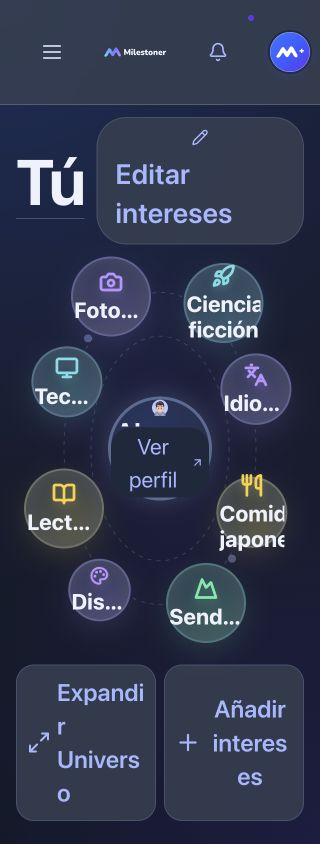
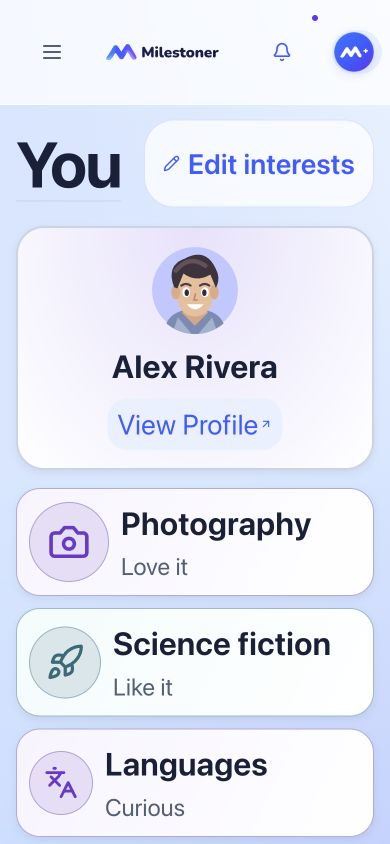
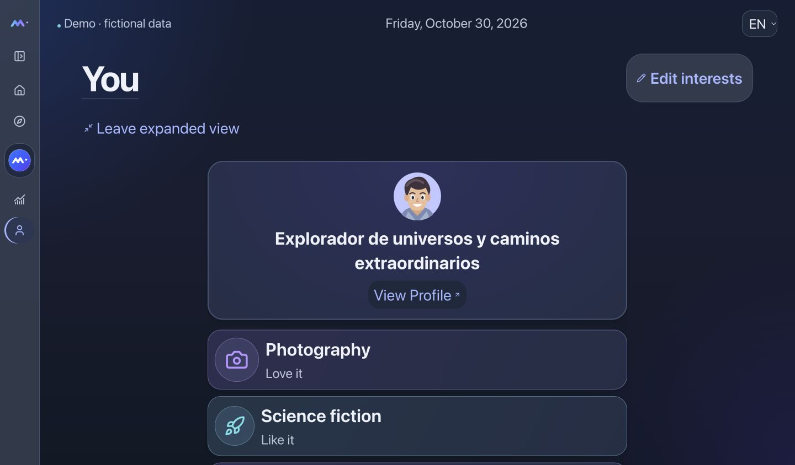
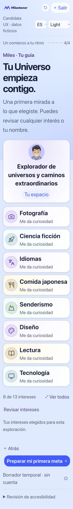

PENDING OWNER VISUAL AND FUNCTIONAL REVIEW. Un avatar, nombres completos y la misma navegación. La órbita aprobada permanece a tamaño normal; desde una base de texto medida de 20px se utiliza una lista de lectura con medallones de afinidad. No cambia datos ni contratos.
Antes: cbc4af6. Capturas reales, datos ficticios. El onboarding interactivo muestra solo el borrador de tu pestaña, que puede estar vacío. Los ejemplos de las capturas no se aplican a tus datos.




Validación: 216 combinaciones de experiencia, ancho, texto, idioma y apariencia; estados vacío/ocho y expansión con 25 intereses; límites de etiquetas y perfil, foco y navegación. Las ramas CSS de contraste aumentado y movimiento reducido se probaron en un harness local. No equivalen a certificación de dispositivo, VoiceOver ni Dynamic Type. El freeze global sigue pendiente.